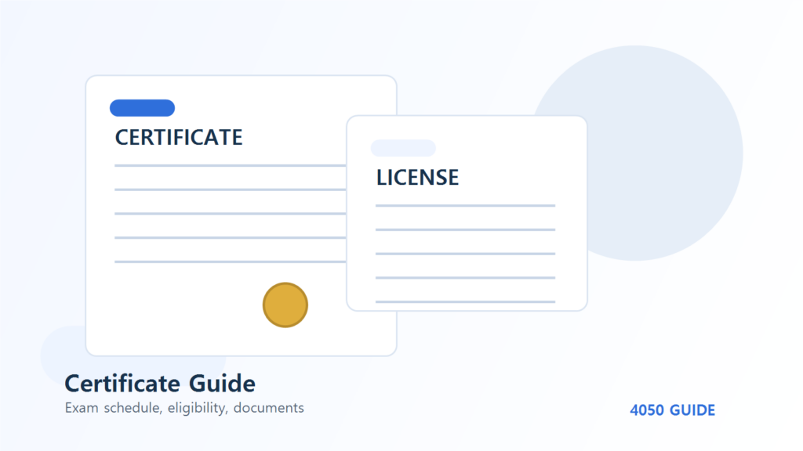

확인 필요 자격증국가기술자격 문제집 고르는 법: 4050이 볼 5가지 기준
자격증 문제집은 최신판이라는 이유만으로 고르면 부족합니다. 4050 준비자는 글씨 크기, 해설 수준, 기출 수록 범위, 실기 사진 자료, 모바일 해설 제공 여부까지 같이 확인해야 공부 피로도를 줄일 수 있습니다.
자격증 문제집은 최신판이라는 이유만으로 고르면 부족합니다. 4050 준비자는 글씨 크기, 해설 수준, 기출 수록 범위, 실기 사진 자료, 모바일 해설 제공 여부까지 같이 확인해야 공부 피로도를 줄일 수 있습니다.
이 글은 40대와 50대가 자격증을 준비할 때 실제로 부딪히는 시간 부족, 낯선 용어, 실기 연습, 국비지원 과정 선택 문제를 기준으로 정리했습니다. 시험 합격만을 목표로 하기보다 취득 후 어디에 활용할지까지 함께 보는 것이 핵심입니다.
공부 계획 요약
| 구분 | 준비할 것 | 4050 체크 포인트 |
|---|---|---|
| 최신 출제기준 반영 | 개정 여부 확인 | 시험 기준이 바뀐 종목은 최신판인지 반드시 봅니다. |
| 해설의 깊이 | 정답 이유와 오답 이유 | 초보자는 정답만 있는 문제집보다 해설형이 유리합니다. |
| 기출 수록 범위 | 최근 5개년 이상 | 반복 출제 유형을 확인할 수 있어야 합니다. |
| 실기 자료 | 사진, 도면, 작업 순서 | 작업형 시험은 이미지와 순서 설명이 중요합니다. |
| 가독성 | 글씨 크기와 편집 | 하루 1~2시간 공부하는 4050에게 피로도가 중요합니다. |
교재명보다 출제기준 반영 여부가 먼저입니다
국가기술자격은 종목별 출제기준과 시험 방식이 바뀔 수 있습니다. 문제집을 고를 때는 표지보다 발행연도, 개정판 여부, 최신 기출 반영 여부를 먼저 확인해야 합니다.
초보자는 해설이 긴 책이 낫습니다
이미 배경지식이 있으면 기출문제만 빠르게 돌려도 되지만, 처음 준비하는 경우에는 왜 틀렸는지 설명해주는 책이 훨씬 도움이 됩니다. 오답을 이해해야 비슷한 문제에서 다시 틀리지 않습니다.
실기형 자격은 사진 자료를 봐야 합니다
전기, 조리, 지게차, 미용처럼 실기 비중이 큰 자격은 문제집만으로 부족할 수 있습니다. 실기 작업 순서, 사진, 도면, 체크리스트가 있는 자료를 함께 보는 것이 좋습니다.
문제집과 강의를 고를 때 보는 기준
문제집은 유명한 책보다 내 수준에 맞는 책이 중요합니다. 처음 시작하는 경우에는 정답만 모아둔 교재보다 오답 해설이 길고 그림, 표, 실기 사진이 충분한 교재가 좋습니다. 특히 국가기술자격은 출제기준이 바뀔 수 있으므로 발행연도와 개정판 여부를 먼저 확인해야 합니다.
강의나 국비지원 학원을 선택할 때도 광고 문구만 보지 말고 실제 수업시간, 실습 장비, 수강생 후기, 수료 후 취업상담 여부를 함께 봐야 합니다. 4050 준비자는 단기간 합격보다 중도 포기하지 않는 일정이 더 중요하므로 집과 학원의 거리, 야간반 여부, 주말반 여부도 현실적으로 계산해야 합니다.
하루 공부 시간이 부족할 때의 분배 방법
| 가능 시간 | 추천 방식 | 주의할 점 |
|---|---|---|
| 하루 30분 | 기출 10문제와 오답 1개만 정리 | 범위를 넓히기보다 매일 끊기지 않는 것이 중요합니다. |
| 하루 1시간 | 개념 20분, 기출 30분, 오답 10분 | 모르는 내용을 오래 붙잡기보다 표시해두고 반복합니다. |
| 하루 2시간 | 과목별 회독과 모의고사 병행 | 마지막 30분은 반드시 오답 복습으로 남깁니다. |
| 주말 집중형 | 평일 오답 표시, 주말 모의고사 | 주말에 새 내용을 몰아넣으면 쉽게 지치므로 복습 비중을 높입니다. |
4050 준비자가 자주 하는 실수
- 시험일정을 확인하지 않고 공부부터 시작하는 경우
- 필기 합격 후 실기 연습장을 뒤늦게 찾는 경우
- 문제집을 여러 권 사지만 한 권도 끝까지 보지 못하는 경우
- 국비지원 과정의 자비부담금만 보고 훈련시간과 실습 환경을 놓치는 경우
- 취득 후 지원할 일자리나 활용처를 미리 확인하지 않는 경우
이런 실수를 줄이려면 공부 시작 전에 시험일정, 문제집, 실습장, 공식 출처, 취업처를 한 번에 점검해야 합니다. 특히 4050은 가족 일정이나 기존 업무와 병행하는 경우가 많기 때문에 무리한 계획보다 지속 가능한 계획이 더 중요합니다.
시험 전 30일 운영법
시험 한 달 전에는 새 자료를 늘리는 것보다 기존 오답을 줄이는 데 집중하는 것이 좋습니다. 1주차에는 전체 범위를 훑고, 2주차에는 기출문제 반복, 3주차에는 모의고사, 마지막 1주에는 오답과 공식 안내를 확인하는 식으로 나누면 흐름이 안정적입니다.
실기시험이 있는 자격증이라면 필기 합격 후가 아니라 필기 준비 중에도 실기 동영상, 작업 순서, 학원 일정, 실습장 위치를 함께 확인해야 합니다. 필기는 혼자 준비해도 실기는 반복 연습이 필요한 경우가 많기 때문입니다.
공부 시작 전 체크리스트
- 최신 출제기준 반영 여부를 확인했는가
- 오답 해설이 충분한가
- 최근 기출 수록 범위가 명확한가
- 실기형 자격은 사진과 작업 순서가 있는가
- 글씨 크기와 편집이 읽기 편한가
문제집이나 강의는 시험 출제기준, 개정판 여부, 본인의 공부 시간에 따라 달라질 수 있습니다. 특정 교재를 고르기 전에는 Q-Net 출제기준과 최근 기출 반영 여부를 함께 확인하세요.
자주 묻는 질문
기출문제만 반복해도 합격할 수 있나요?
배경지식이 있거나 유사 업무 경험이 있다면 기출 반복이 큰 도움이 됩니다. 하지만 용어가 낯설다면 처음 1회독은 해설 중심으로 보고, 두 번째부터 기출 속도를 높이는 편이 안전합니다.
문제집은 몇 권이 적당한가요?
처음에는 한 권을 끝까지 보는 것이 좋습니다. 여러 권을 동시에 보면 공부량은 많아 보이지만 오답이 정리되지 않습니다. 한 권을 2~3회독한 뒤 부족한 부분만 추가 자료로 보완하세요.
국비지원 학원을 꼭 다녀야 하나요?
필기 중심 시험은 독학도 가능합니다. 다만 실기 장비가 필요하거나 작업 순서를 직접 익혀야 하는 자격증은 학원이나 실습장이 시간을 줄여줄 수 있습니다. 비용보다 실습 가능성을 기준으로 판단하는 것이 좋습니다.